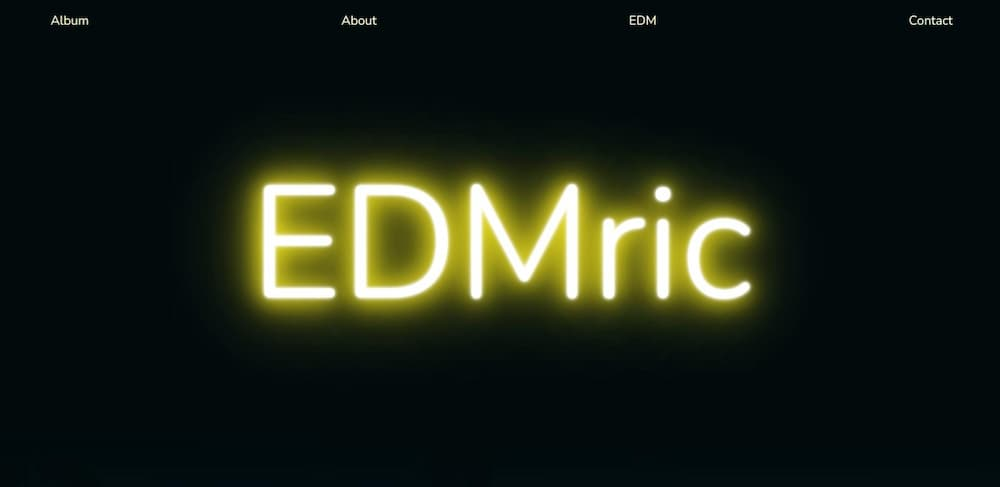
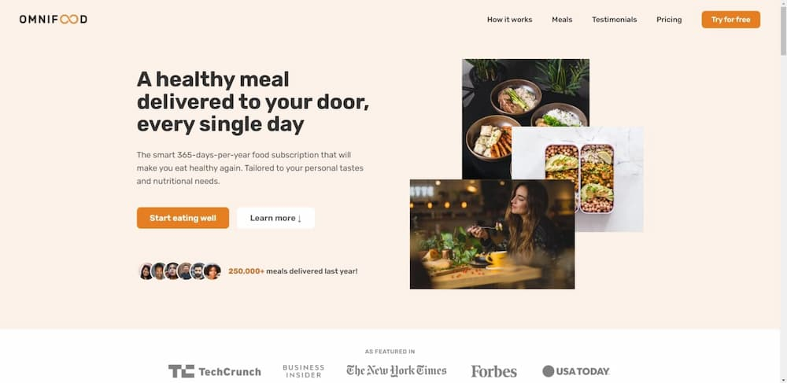

Projekte




Mein Name ist Eric Rudischhauser. Ich habe im Selbststudium programmieren gelernt. Mitte September 2022 starte ich mein Informatikstudium an der UZH.
Copyright © 2022 Eric Rudischhauser. Alle Rechte vorbehalten.